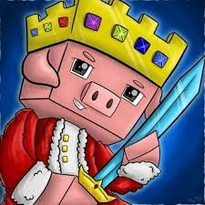

|
Herobrine é tido como um fantasma em Minecraft e suas primeiras |
|
No dia 9 de outubro de 2010, Bruno Monteiro Aiub mais conhecido pela |
|
O dia é 30 de maio de 2011 e Eduardo Faria decide postar seu primeiro video |  |
Basicamente foi o primeiro trailer do jogo |
|
9 de maio de 2012 data em que minecraft foi lançado para consoles |
|  | 1 de novembro de 2013 technoblade posta seu primeiro video entitulado |
|
no dia 13 de abril de 2013 Simon Collins-Laflamme e Philippe Touchette |
Segundo a Microsoft, que comprou a franquia por US$ 2,5 bilhões |
|
O Far Lands (ou Terras distantes em português) é um bug de terreno |
Não tem como falar de acontecimentos sem citar o Dream, um youtuber |
Bem, como eu citei no tópico 8 technoblade foi um GRANDE youtuber de minecraft |
A pior atualização do minecraft na minha opinião e em boa parte |
Na minha opinião e em boa parte da comunidade a 1.16 |
Isolados foi uma paródia músical da música "See you again" |
No dia 4 de jun de 2013, Viniccius13 Considerado por muitos |